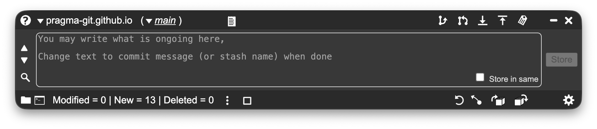
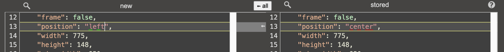
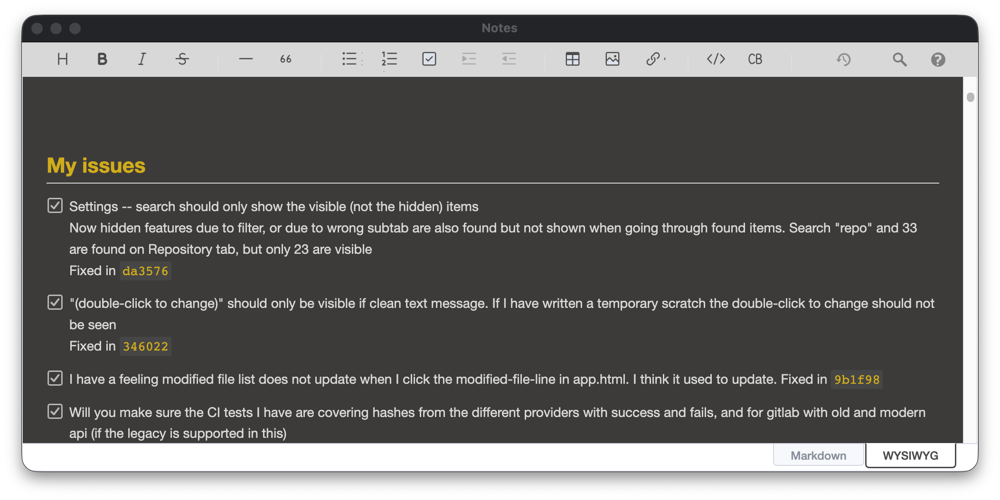
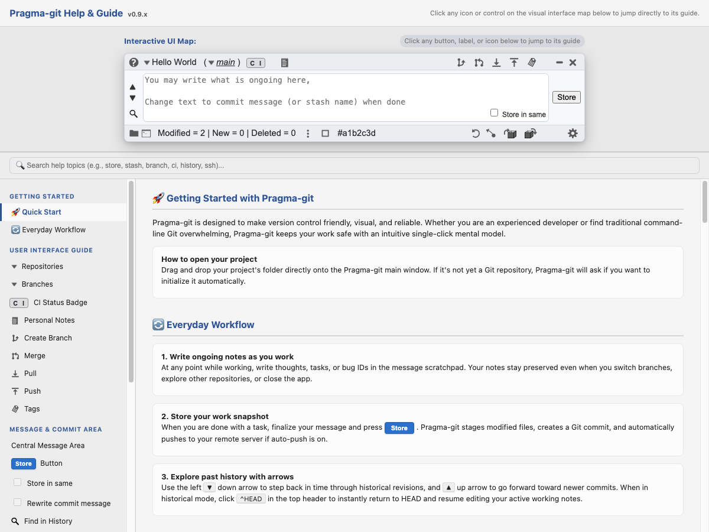

While traditional Git clients fill your screen with heavy graphs and complex panes, Pragma-git operates as a small, non-obtrusive companion window. It stays right alongside your editor, ready at a glance or reachable directly from your system tray.

The Pragma-git companion window: small, always accessible, showing exactly what matters.
Built for daily programming workflows, removing friction and guarding you against mistakes without cluttering your workspace.
Instead of taking over your entire screen, Pragma-git lives comfortably on a busy desktop right beside your editor or terminal. Always easy to glance at, minimize, or summon from your system tray.
Starting with a project is instant. Drag any folder from Finder or Explorer directly onto Pragma-git to open or initialize it, or drop a Git URL to start cloning with zero typing.
Instantly see if your last push passed or failed continuous integration. Pragma-git displays live build status badges for GitHub Actions, GitLab CI, and Bitbucket directly on the titlebar.
Designed to fit your visual preference, with beautifully crafted light and dark themes across every window. High-contrast typography ensures comfortable reading during long coding sessions.
The commit message box doubles as an active scratchpad while you work. Jot down ideas and todo notes; Pragma-git auto-saves your repo drafts and only asks to commit when changes are staged.
When merge clashes happen, Pragma-git guides you step-by-step through resolving them with built-in Pragma-merge. Visual 2-way and 3-way conflict views let you pick chunks with single clicks.
Control Git repositories running on remote Linux servers directly from your desktop over SSH. Visual git status, remote diffing, and built-in assistance to generate and deploy SSH keys.
Never waste time opening a shell and typing cd paths. A single click opens your preferred terminal or file manager directly in your project folder—both for local repos and remote SSH servers.
Pragma-git gives you standard, 100% compatible Git capabilities without the complexity:
Understand your project's history at a glance without visual chaos. Pragma-git structures complex repository histories with clear, distinct swimlanes rather than tangled spaghetti lines:
Merge conflicts are one of the biggest pain points in Git. Pragma-git includes Pragma-merge to walk you through conflict resolution with visual confidence:


Never lose track of your work in progress. Pragma-git includes a complete Markdown & WYSIWYG note-taking environment tied directly to each repository:
You don't need to read an external handbook to master Pragma-git. The application includes a live interactive inspector built directly into the About & Help window:

100% free and open-source software under the MIT license. Works seamlessly with all standard Git repositories.
Windows 10 & 11 (64-bit)
Seamless notification tray integration, quick window toggle, and installer.
Debian, Ubuntu, Mint, Fedora, RedHat, openSUSE
Native .deb and .rpm packages available.